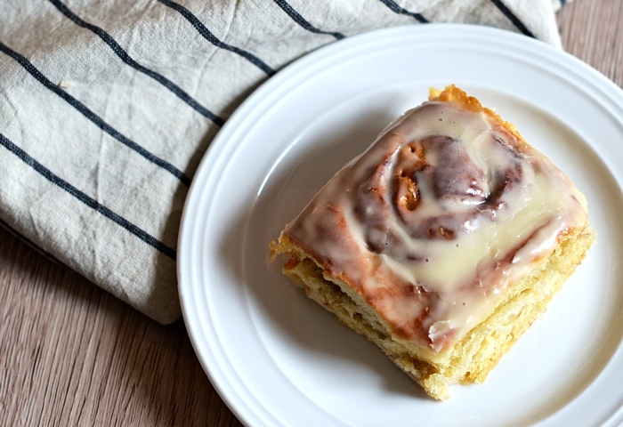

Luciferin
3.0 List Elements
The Best Home-Made Cinnamon Roll Recipe

Ingredients
For the dough: 🍞
¾ cup warm milk
2 ¼ teaspoons yeast
¼ cup granulated sugar
1 egg plus 1 egg yolk
¼ cup butter
3 cups bread flour
For the filling: 🍶
⅔ cup dark brown sugar
1 ½ tablespoons ground cinnamon
¼ cup butter
Instructions
Mix the milk with the yeast, sugar, eggs.
Melt the butter and add to the mixture.
Add in the flour and mix until combined into a dough.
Knead the dough for 10 minuites.
Transfer the dough into a large bowl and cover with plastic wrap. Leave it somewhere to rise for 2 hours.
After the dough has doubled in size, roll it out into a large rectangle.
Melt the butter for the filling and mix in the sugar and cinnamon.
Spread the filling onto the dough then roll the dough into a swiss roll.
Cut the roll into 3cm sections and place flat into a baking tray.
Pre-heat the oven to 350F or 180C, then bake the rolls for 20-25min until lightly brown.
Luciferin
|
Developed & curated by
luciferincia